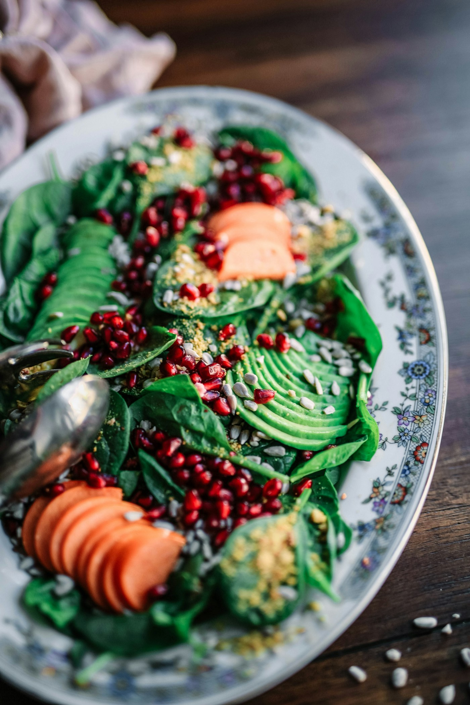

Nutrição clínica
Um espaço para conversar sobre alimentação e saúde, considerando suas necessidades e o seu momento de vida.
NUTRIÇÃO QUE ACOLHE A SUA HISTÓRIA
O cuidado começa com um olhar para você. Nutrição clínica e funcional para trazer mais sentido às suas escolhas e à sua relação com a alimentação.
Vamos cuidar de você? ↗Há mais de 25 anos,
nutrindo vidas e histórias.

ALIMENTO, CUIDADO & VIDA.O equilíbrio
começa no cuidado.
01 / UM OLHAR PARA O TODO
Sua rotina, sua história e seus desafios também fazem parte da conversa. O ponto de partida é entender o cuidado que você procura.
Um espaço para conversar sobre alimentação e saúde, considerando suas necessidades e o seu momento de vida.
Um olhar integrado para o organismo, conectando o cuidado nutricional ao equilíbrio e ao bem-estar.
Cada pessoa traz uma história. Acolher suas particularidades é parte de construir uma relação mais próxima com o cuidado.
Nutrir é também
escutar, acolher e cuidar.
02 / PRAZER, KALLINA
Sou Kallina Duarte, nutricionista clínica e funcional. Há mais de 25 anos, a nutrição faz parte da minha história de cuidado com as pessoas.
Na minha apresentação, compartilho também uma vivência pessoal de mais de 17 anos transformada pelo autismo. Uma parte da minha história que acompanha meu olhar sobre a vida e seus desafios.
Minha proposta é levar equilíbrio orgânico ao cuidado nutricional, com atenção às particularidades de cada história.
Conheça meu dia a dia no Instagram ↗03 / SEU PRIMEIRO PASSO
Acesse o link de atendimento para conversar sobre sua consulta e esclarecer suas dúvidas.
Compartilhe o que você busca, como é sua rotina e o que deseja trazer para o cuidado nutricional.
Converse com Kallina sobre a proposta de atendimento e os próximos passos para você.
UM ESPAÇO PARA CUIDAR DE VOCÊ
Atendimento no Integralle, em Recife.
IntegralleANTES DA CONSULTA
Use um dos botões de agendamento para abrir o link de atendimento divulgado no Instagram de Kallina. Por lá, você pode consultar a disponibilidade e os detalhes da consulta.
No Integralle, na Rua Nicarágua, 85, térreo, no bairro Espinheiro, em Recife, Pernambuco.
Entre em contato e conte o que você procura. Kallina poderá esclarecer o formato do atendimento e a adequação da proposta às suas necessidades.
CADA HISTÓRIA MERECE CUIDADO
Vamos conversar sobre o próximo passo?
Quero agendar minha consulta ↗